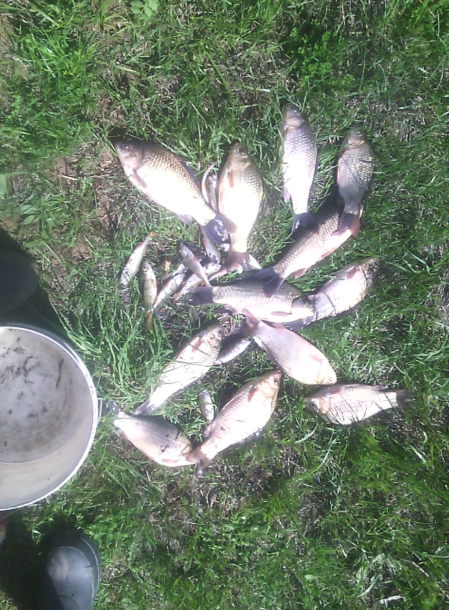
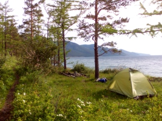
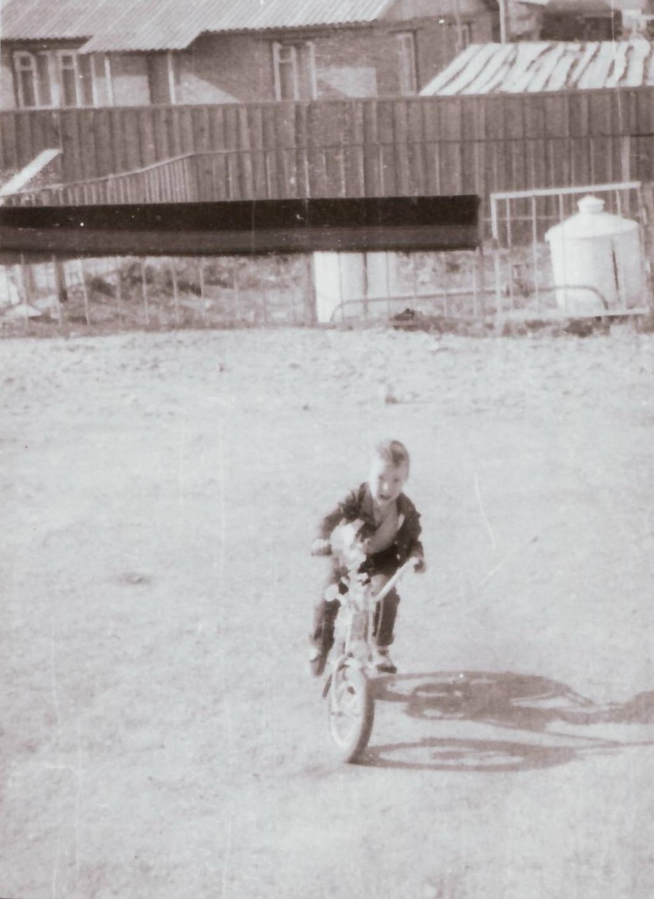
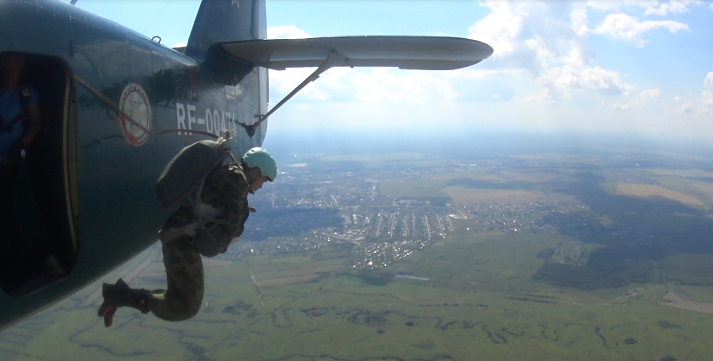

Работа и опыт
iSpring
Работаю специалистом по качеству в команде разработки мобильного приложения.
Другие места работы
Все самое интересное происходит на работе. Найти работу, которая приносит удовольствие - достойная цель, чтобы пробовать разные направления в развитии. С начала рабочей деятельности испробовал должности слесаря-ремонтника, электрика, инженера-конструктора, инженера-электроника и писаря в штабе.
Делай что должен и будь что будет (Fais ce que dois, advienne, que pourra)
Марк Аврелий
Учеба
Школа
Козьмодемьянская школа-лицей.
Техникум
Йошкар-олинский технологический колледж, специальность - радиотехника.
ВУЗ
Казанский национальный исследовательский технический университет им. А. Н. Туполева, специальность - автоматизированные системы обработки информации и управления.
Курсы повышения квалификации
Казанский национальный исследовательский технический университет им. А. Н. Туполева, специальность - автоматизированные системы обработки информации и управления.
Хобби и увлечения
Музыка
- Гитара
- Синтезатор
Рукоделие
- Papercraft
- Резьба по дереву
- Кожаные изделия
Отдых на природе
-
Рыбалка
 -
Пешие походы с палаткой
 -
Велопрогулки
 -
Прыжки с парашютом
